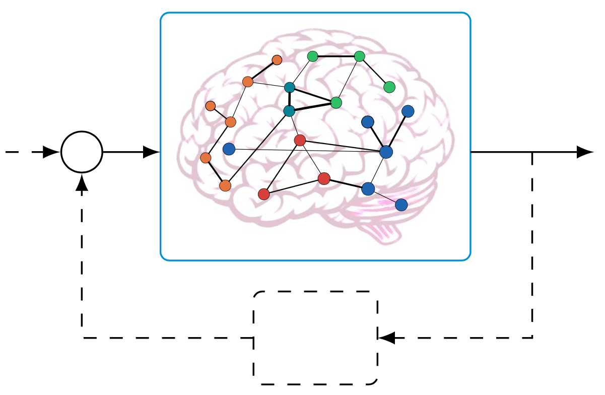

Tommaso Menara
Postdoctoral ScholarDepartment of Mechanical and Aerospace Engineering |
|  | Research Interests
|
Contact
E-mail: tmenara[at]ucsd[dot]edu
Skype: tommasomenara
Tommaso Menara
ContactE-mail: tmenara[at]ucsd[dot]edu LinksSelect Publications |